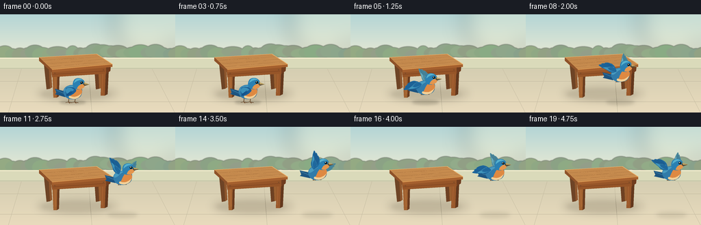
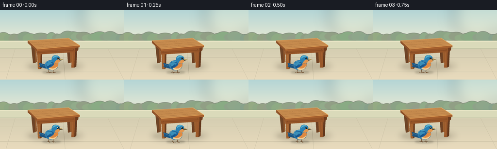

CODING AGENTS AS PIXEL WORLD MODELS
traex/GPT-6.1-Sol · dynamic_spatial_relationship_0042
点击播放 · 原生 RGB 像素
逐轮保存的候选
回放视频、检查图与代码变化。
每份候选均可单独播放。实际图片检查记录在下方工具轨迹中。
候选 01播放与检查图
点击播放 · 原生 RGB 像素


展开代码变化
--- 上一保存版本
+++ 本次保存版本
@@ -0,0 +1,188 @@
+from pathlib import Path
+import json, math
+import numpy as np
+from PIL import Image, ImageDraw, ImageFilter
+from artifact_io import save
+
+ROOT = Path(__file__).resolve().parent
+SPEC = json.loads((ROOT/'task_spec.json').read_text())
+W,H = SPEC['width'],SPEC['height']
+S = 4
+rng = np.random.default_rng(41)
+
+def pt(p): return (round(p[0]*S), round(p[1]*S))
+def polygon(im, points, fill): ImageDraw.Draw(im).polygon([pt(p) for p in points], fill=fill)
+def line(im, points, fill, width=1): ImageDraw.Draw(im).line([pt(p) for p in points],fill=fill,width=max(1,round(width*S)),joint='curve')
+def ellipse(im, box, fill): ImageDraw.Draw(im).ellipse(tuple(round(v*S) for v in box),fill=fill)
+def path(im, commands, fill, transform=None):
+ points=[]; current=None
+ for cmd in commands:
+ if cmd[0]=='M' or cmd[0]=='L':
+ current=np.array(cmd[1:3],dtype=float); points.append(current)
+ elif cmd[0]=='C':
+ p0=current.copy(); p1=np.array(cmd[1:3]);p2=np.array(cmd[3:5]);p3=np.array(cmd[5:7])
+ for t in np.linspace(0,1,18)[1:]: points.append((1-t)**3*p0+3*(1-t)**2*t*p1+3*(1-t)*t*t*p2+t**3*p3)
+ current=p3
+ if transform: points=[transform(p) for p in points]
+ polygon(im,points,fill)
+
+def glow_ellipse(im,box,color,blur):
+ lay=Image.new('RGBA',im.size)
+ ellipse(lay,box,color)
+ im.alpha_composite(lay.filter(ImageFilter.GaussianBlur(blur*S)))
+
+# Fixed camera, a quiet garden patio and a solid wooden table.
+y,x=np.mgrid[0:H*S,0:W*S]/S
+sky=np.zeros((H*S,W*S,3),dtype=float)
+for c,(top,bottom) in enumerate(zip((180,213,214),(238,236,211))):
+ sky[:,:,c]=top+(bottom-top)*np.clip(y/70,0,1)
+base=Image.fromarray(np.uint8(sky)).convert('RGBA')
+glow_ellipse(base,(166,-30,264,63),(255,246,208,60),15)
+# Distant greenery is subdued, leaving the table and bird as the visual focus.
+far=Image.new('RGBA',base.size)
+for cx in np.arange(-15,275,11):
+ cy=56+rng.uniform(-3,4); rx=rng.uniform(9,17); ry=rng.uniform(7,11)
+ ellipse(far,(cx-rx,cy-ry,cx+rx,cy+ry),tuple(int(v) for v in (142+rng.uniform(-7,7),165+rng.uniform(-7,7),136+rng.uniform(-5,5)))+(255,))
+base.alpha_composite(far.filter(ImageFilter.GaussianBlur(.6*S)))
+# Low sunlit garden wall.
+polygon(base,[(0,64),(256,64),(256,82),(0,82)],(218,218,186,255))
+line(base,[(0,64),(256,64)],(246,239,208,255),1.4)
+line(base,[(0,79),(256,79)],(190,193,163,255),1.0)
+# Matte stone terrace.
+ground=Image.new('RGBA',base.size)
+a=np.asarray(ground).copy()
+for c,(top,bottom) in enumerate(zip((213,206,178),(233,219,189))):
+ a[:,:,c]=np.uint8(top+(bottom-top)*np.clip((y-80)/64,0,1))
+a[:,:,3]=np.where(y>=80,255,0)
+base.alpha_composite(Image.fromarray(a))
+# Restrained paving joints establish the foreground plane.
+for yy in [98,128]: line(base,[(0,yy),(256,yy)],(193,184,157,100),.45)
+for pts in [[(31,80),(12,144)],[(129,80),(134,144)],[(222,80),(255,144)]]:
+ line(base,pts,(196,187,160,100),.45)
+# Soft contact and cast shadows.
+glow_ellipse(base,(53,103,173,129),(79,70,50,31),5)
+glow_ellipse(base,(60,109,162,125),(71,60,45,25),2.7)
+# Rear legs, correctly occluded by tabletop and aprons.
+polygon(base,[(64,72),(71,73),(73,109),(68,110)],(110,68,38,255))
+polygon(base,[(71,73),(74,71),(76,107),(73,109)],(143,87,45,255))
+polygon(base,[(137,68),(143,69),(145,109),(140,110)],(110,65,35,255))
+polygon(base,[(143,69),(147,71),(148,108),(145,109)],(154,95,47,255))
+# Front leg faces, tapered and shaded.
+polygon(base,[(76,80),(84,80),(83,122),(78,122)],(161,98,48,255))
+polygon(base,[(84,80),(87,78),(86,120),(83,122)],(105,59,30,255))
+polygon(base,[(148,77),(155,76),(153,119),(147,119)],(153,88,43,255))
+polygon(base,[(155,76),(159,74),(157,117),(153,119)],(99,56,29,255))
+line(base,[(80,87),(81,117)],(188,119,63,255),.6)
+line(base,[(150,82),(149,115)],(182,111,56,255),.55)
+# Wooden apron connecting all the legs.
+polygon(base,[(74,76),(155,71),(155,87),(76,92)],(150,85,40,255))
+polygon(base,[(155,71),(162,73),(161,83),(155,87)],(112,61,31,255))
+line(base,[(77,88),(153,83)],(118,62,30,255),.65)
+line(base,[(78,81),(152,77)],(197,121,62,255),.65)
+# Thick rectangular tabletop in perspective.
+polygon(base,[(57,63),(141,58),(164,73),(76,81)],(198,139,78,255))
+polygon(base,[(57,63),(76,81),(76,85),(57,68)],(142,82,41,255))
+polygon(base,[(76,81),(164,73),(164,77),(76,85)],(165,96,46,255))
+line(base,[(57,63),(141,58),(164,73)],(238,179,108,255),.85)
+line(base,[(76,81),(164,73)],(236,166,87,255),.8)
+# Plank divisions and subtle continuous woodgrain clipped to the top plane.
+mask=Image.new('L',base.size,0)
+polygon(mask,[(58,63.3),(141,58.5),(163,72.6),(76.2,80.3)],255)
+grain=Image.new('RGBA',base.size)
+for u in [0.26,.52,.77]:
+ l=(57+19*u,63+18*u); r=(141+23*u,58+15*u)
+ line(grain,[l,r],(129,79,40,165),.45)
+ line(grain,[(l[0],l[1]+.65),(r[0],r[1]+.65)],(244,185,115,95),.4)
+for i in range(41):
+ yy=rng.uniform(60,82); xx=rng.uniform(47,130); ln=rng.uniform(10,39)
+ ps=[(xx+t*ln, yy-t*ln*.082+.23*math.sin(t*5+i)) for t in np.linspace(0,1,12)]
+ line(grain,ps,(139,85,40,int(rng.uniform(28,65))),.24)
+grain.putalpha(Image.fromarray((np.asarray(grain.getchannel('A'),dtype=np.float32)*np.asarray(mask)/255).astype('uint8')))
+base.alpha_composite(grain)
+# Tiny wood joinery heads on the front apron.
+for xx,yy in [(80,86),(151,81)]:
+ ellipse(base,(xx-.7,yy-.7,xx+.7,yy+.7),(103,60,33,255))
+ ellipse(base,(xx-.3,yy-.5,xx+.2,yy),(215,147,77,255))
+
+
+def bird(im,cx,cy,flight,phase,scale=1.0,crouch=0):
+ angle= -.055 if flight else 0
+ def T(p):
+ xx,yy=p; return (cx+scale*(xx*math.cos(angle)-yy*math.sin(angle)),cy+scale*(xx*math.sin(angle)+yy*math.cos(angle)))
+ def P(cmds,color): path(im,cmds,color,T)
+ def E(box,color):
+ # For small round facial details rotation need not alter the silhouette.
+ p1=T((box[0],box[1]));p2=T((box[2],box[3]));ellipse(im,(*p1,*p2),color)
+ def L(points,color,width=.6): line(im,[T(p) for p in points],color,width*scale)
+ def wing(root,theta,far=False):
+ rad=math.radians(theta); co,si=math.cos(rad),math.sin(rad)
+ length=.90 if far else 1.
+ def WT(p):
+ s,n=p;return T((root[0]+length*(s*co-n*si),root[1]+length*(s*si+n*co)))
+ colors= ((77,139,157,255),(105,170,185,255),(55,113,141,255)) if far else ((31,104,157,255),(64,150,188,255),(20,78,130,255))
+ path(im,[('M',0,0),('C',4,-4,8,-5,13,-3),('C',18,-2,23,-2,27,0),('C',27,1,25,2,23,2),('L',24,3),('C',24,4,21,5,20,5),('L',20,6),('C',17,8,14,8,13,8),('C',8,9,3,5,0,0)],colors[0],WT)
+ path(im,[('M',1,0),('C',6,-3,12,-3,20,-1),('C',16,1,10,4,7,5),('C',4,4,2,2,1,0)],colors[1],WT)
+ for j in range(6):
+ tip=(26-j*1.8, .8+j*1.2); start=(9-j*.5,1+j*.7)
+ line(im,[WT(start),WT((tip[0]-3,tip[1]-.1)),WT(tip)],colors[2],.5*scale)
+ path(im,[('M',1,0),('C',5,-2,10,-2,13,0),('C',10,4,6,5,3,3),('C',1,2,0,1,1,0)],colors[0],WT)
+ if flight:
+ flap=math.sin(phase)
+ wing((3,-5),-71+flap*65,True)
+ # Slender tail feathers behind the body.
+ P([('M',-7,1),('L',-25,-4),('L',-23,2),('L',-25,4),('L',-11,8),('L',-4,5)],(30,86,130,255))
+ L([(-23,-2),(-10,4)],(72,142,177,255),.7)
+ L([(-22,3),(-10,6)],(17,65,112,255),.6)
+ # Feet grip the ground at first, then tuck against the belly in flight.
+ if not flight:
+ for dx in [-5,4]:
+ L([(dx,8),(dx-1,15-crouch),(dx+4,16-crouch)],(103,71,43,255),.85)
+ L([(dx-1,15-crouch),(dx-5,16-crouch)],(103,71,43,255),.7)
+ L([(dx-1,15-crouch),(dx+1,17-crouch)],(117,79,45,255),.65)
+ else:
+ for dx in [-4,4]: L([(dx,8),(dx-3,11),(dx+1,11)],(100,65,38,255),.8)
+ # Rounded bluebird body with warm breast and pale belly.
+ P([('M',-13,-1),('C',-12,-7,-5,-10,2,-9),('C',11,-10,15,-5,13,2),('C',13,8,6,12,-2,11),('C',-8,11,-14,6,-13,-1)],(49,123,169,255))
+ P([('M',7,-7),('C',14,-5,15,1,11,6),('C',8,11,0,12,-5,9),('C',-1,5,0,-3,7,-7)],(222,137,66,255))
+ P([('M',12,3),('C',10,10,3,12,-3,10),('C',-6,9,-6,7,-4,6),('C',1,9,7,8,12,3)],(241,207,151,255))
+ P([('M',-12,-2),('C',-11,-6,-5,-9,1,-8),('C',3,-7,-4,-5,-6,-2),('C',-10,1,-13,1,-12,-2)],(72,154,191,255))
+ # Neck and head: consistent bright crown, dark eye, small pointed beak.
+ P([('M',1,-6),('C',-1,-12,1,-19,8,-19),('C',15,-19,18,-14,17,-9),('C',16,-5,11,-2,7,-3),('C',4,-3,2,-4,1,-6)],(42,128,178,255))
+ P([('M',2,-12),('C',3,-19,10,-20,14,-16),('C',9,-17,6,-15,2,-12)],(87,177,205,255))
+ P([('M',10,-9),('C',14,-12,17,-10,17,-7),('C',15,-4,10,-2,6,-4),('C',7,-6,8,-8,10,-9)],(227,150,78,255))
+ P([('M',16,-13),('L',24,-10),('L',17,-8),('L',15,-10)],(87,73,51,255))
+ P([('M',16,-13),('L',24,-10),('L',17,-10)],(188,162,98,255))
+ E((10.8,-14.5,14.6,-10.7),(19,45,55,255))
+ E((11.4,-14.0,13.9,-11.5),(8,24,32,255))
+ E((11.7,-13.8,12.7,-12.8),(255,254,229,255))
+ if flight:
+ wing((-5,-4),-145+math.sin(phase)*68,False)
+ else:
+ P([('M',-9,-5),('C',-3,-8,5,-5,5,-1),('C',3,3,-3,7,-10,7),('C',-7,4,-13,0,-9,-5)],(29,96,151,255))
+ P([('M',-9,-4),('C',-5,-7,1,-4,2,-2),('C',-2,0,-5,2,-8,3),('C',-10,1,-11,-2,-9,-4)],(59,143,184,255))
+ for j in range(4): L([(-2+j*.4,-1+j*.9),(-9+j*.6,5+j*.4)],(16,74,130,255),.55)
+
+frames=[]
+for i in range(SPEC['frames']):
+ im=base.copy()
+ if i<4:
+ cx=106;cy=113+.3*math.sin(i*1.4); flying=False;crouch=0
+ elif i==4:
+ cx=107;cy=115;flying=False;crouch=2
+ else:
+ # Ascending diagonal trajectory ends wholly to the right of the table.
+ u=min(1,(i-4)/11)
+ smooth=u*u*(3-2*u)
+ cx=107+103*smooth
+ cy=113-47*math.sin(u*math.pi/2)
+ if i>15: cx=210+(i-15)*.7;cy=66+1.1*math.sin((i-15)*1.8)
+ flying=True;crouch=0
+ altitude=max(0,113-cy)
+ sx=19+altitude*.07; sy=3.1+altitude*.025
+ alpha=int(58-altitude*.65)
+ glow_ellipse(im,(cx-sx,129-sy,cx+sx,129+sy),(66,64,45,max(17,alpha)),1.8+altitude*.023)
+ bird(im,cx,cy,flying,(i-5)*2.3-.8,1.03,crouch)
+ rgb=im.convert('RGB').resize((W,H),Image.Resampling.LANCZOS)
+ frames.append(np.asarray(rgb,dtype=np.uint8))
+save(np.stack(frames),ROOT)
+print(f'Saved {len(frames)} RGB frames, {W}x{H}, {SPEC["fps"]} fps to {ROOT}')
可观测工具轨迹
实际执行的命令与返回图片。
命令 1exit 0
/bin/bash -lc 'ls -la && cat prompt.txt && cat GENERATION_RULES.md && cat task_spec.json'
命令 2exit 0
/bin/bash -lc "cat artifact_io.py && python - <<'PY'
import numpy,PIL
print('numpy/PIL available')
PY"命令 3exit 0
/bin/bash -lc "cat > generate.py <<'PY'
from pathlib import Path
import json, math
import numpy as np
from PIL import Image, ImageDraw, ImageFilter
from artifact_io import save
ROOT = Path(__file__).resolve().parent
SPEC = json.loads((ROOT/'task_spec.json').read_text())
W,H = SPEC['width'],SPEC['height']
S = 4
rng = np.random.default_rng(41)
def pt(p): return (round(p[0]*S), round(p[1]*S))
def polygon(im, points, fill): ImageDraw.Draw(im).polygon([pt(p) for p in points], fill=fill)
def line(im, points, fill, width=1): ImageDraw.Draw(im).line([pt(p) for p in points],fill=fill,width=max(1,round(width*S)),joint='curve')
def ellipse(im, box, fill): ImageDraw.Draw(im).ellipse(tuple(round(v*S) for v in box),fill=fill)
def path(im, commands, fill, transform=None):
points=[]; current=None
for cmd in commands:
if cmd[0]=='M' or cmd[0]=='L':
current=np.array(cmd[1:3],dtype=float); points.append(current)
elif cmd[0]=='C':
p0=current.copy(); p1=np.array(cmd[1:3]);p2=np.array(cmd[3:5]);p3=np.array(cmd[5:7])
for t in np.linspace(0,1,18)[1:]: points.append((1-t)**3*p0+3*(1-t)**2*t*p1+3*(1-t)*t*t*p2+t**3*p3)
current=p3
if transform: points=[transform(p) for p in points]
polygon(im,points,fill)
def glow_ellipse(im,box,color,blur):
lay=Image.new('RGBA',im.size)
ellipse(lay,box,color)
im.alpha_composite(lay.filter(ImageFilter.GaussianBlur(blur*S)))
# Fixed camera, a quiet garden patio and a solid wooden table.
y,x=np.mgrid[0:H*S,0:W*S]/S
sky=np.zeros((H*S,W*S,3),dtype=float)
for c,(top,bottom) in enumerate(zip((180,213,214),(238,236,211))):
sky[:,:,c]=top+(bottom-top)*np.clip(y/70,0,1)
base=Image.fromarray(np.uint8(sky)).convert('RGBA')
glow_ellipse(base,(166,-30,264,63),(255,246,208,60),15)
# Distant greenery is subdued, leaving the table and bird as the visual focus.
far=Image.new('RGBA',base.size)
for cx in np.arange(-15,275,11):
cy=56+rng.uniform(-3,4); rx=rng.uniform(9,17); ry=rng.uniform(7,11)
ellipse(far,(cx-rx,cy-ry,cx+rx,cy+ry),tuple(int(v) for v in (142+rng.uniform(-7,7),165+rng.uniform(-7,7),136+rng.uniform(-5,5)))+(255,))
base.alpha_composite(far.filter(ImageFilter.GaussianBlur(.6*S)))
# Low sunlit garden wall.
polygon(base,[(0,64),(256,64),(256,82),(0,82)],(218,218,186,255))
line(base,[(0,64),(256,64)],(246,239,208,255),1.4)
line(base,[(0,79),(256,79)],(190,193,163,255),1.0)
# Matte stone terrace.
ground=Image.new('RGBA',base.size)
a=np.asarray(ground).copy()
for c,(top,bottom) in enumerate(zip((213,206,178),(233,219,189))):
a[:,:,c]=np.uint8(top+(bottom-top)*np.clip((y-80)/64,0,1))
a[:,:,3]=np.where(y>=80,255,0)
base.alpha_composite(Image.fromarray(a))
# Restrained paving joints establish the foreground plane.
for yy in [98,128]: line(base,[(0,yy),(256,yy)],(193,184,157,100),.45)
for pts in [[(31,80),(12,144)],[(129,80),(134,144)],[(222,80),(255,144)]]:
line(base,pts,(196,187,160,100),.45)
# Soft contact and cast shadows.
glow_ellipse(base,(53,103,173,129),(79,70,50,31),5)
glow_ellipse(base,(60,109,162,125),(71,60,45,25),2.7)
# Rear legs, correctly occluded by tabletop and aprons.
polygon(base,[(64,72),(71,73),(73,109),(68,110)],(110,68,38,255))
polygon(base,[(71,73),(74,71),(76,107),(73,109)],(143,87,45,255))
polygon(base,[(137,68),(143,69),(145,109),(140,110)],(110,65,35,255))
polygon(base,[(143,69),(147,71),(148,108),(145,109)],(154,95,47,255))
# Front leg faces, tapered and shaded.
polygon(base,[(76,80),(84,80),(83,122),(78,122)],(161,98,48,255))
polygon(base,[(84,80),(87,78),(86,120),(83,122)],(105,59,30,255))
polygon(base,[(148,77),(155,76),(153,119),(147,119)],(153,88,43,255))
polygon(base,[(155,76),(159,74),(157,117),(153,119)],(99,56,29,255))
line(base,[(80,87),(81,117)],(188,119,63,255),.6)
line(base,[(150,82),(149,115)],(182,111,56,255),.55)
# Wooden apron connecting all the legs.
polygon(base,[(74,76),(155,71),(155,87),(76,92)],(150,85,40,255))
polygon(base,[(155,71),(162,73),(161,83),(155,87)],(112,61,31,255))
line(base,[(77,88),(153,83)],(118,62,30,255),.65)
line(base,[(78,81),(152,77)],(197,121,62,255),.65)
# Thick rectangular tabletop in perspective.
polygon(base,[(57,63),(141,58),(164,73),(76,81)],(198,139,78,255))
polygon(base,[(57,63),(76,81),(76,85),(57,68)],(142,82,41,255))
polygon(base,[(76,81),(164,73),(164,77),(76,85)],(165,96,46,255))
line(base,[(57,63),(141,58),(164,73)],(238,179,108,255),.85)
line(base,[(76,81),(164,73)],(236,166,87,255),.8)
# Plank divisions and subtle continuous woodgrain clipped to the top plane.
mask=Image.new('L',base.size,0)
polygon(mask,[(58,63.3),(141,58.5),(163,72.6),(76.2,80.3)],255)
grain=Image.new('RGBA',base.size)
for u in [0.26,.52,.77]:
l=(57+19*u,63+18*u); r=(141+23*u,58+15*u)
line(grain,[l,r],(129,79,40,165),.45)
line(grain,[(l[0],l[1]+.65),(r[0],r[1]+.65)],(244,185,115,95),.4)
for i in range(41):
yy=rng.uniform(60,82); xx=rng.uniform(47,130); ln=rng.uniform(10,39)
ps=[(xx+t*ln, yy-t*ln*.082+.23*math.sin(t*5+i)) for t in np.linspace(0,1,12)]
line(grain,ps,(139,85,40,int(rng.uniform(28,65))),.24)
grain.putalpha(Image.fromarray((np.asarray(grain.getchannel('A'),dtype=np.float32)*np.asarray(mask)/255).astype('uint8')))
base.alpha_composite(grain)
# Tiny wood joinery heads on the front apron.
for xx,yy in [(80,86),(151,81)]:
ellipse(base,(xx-.7,yy-.7,xx+.7,yy+.7),(103,60,33,255))
ellipse(base,(xx-.3,yy-.5,xx+.2,yy),(215,147,77,255))
def bird(im,cx,cy,flight,phase,scale=1.0,crouch=0):
angle= -.055 if flight else 0
def T(p):
xx,yy=p; return (cx+scale*(xx*math.cos(angle)-yy*math.sin(angle)),cy+scale*(xx*math.sin(angle)+yy*math.cos(angle)))
def P(cmds,color): path(im,cmds,color,T)
def E(box,color):
# For small round facial details rotation need not alter the silhouette.
p1=T((box[0],box[1]));p2=T((box[2],box[3]));ellipse(im,(*p1,*p2),color)
def L(points,color,width=.6): line(im,[T(p) for p in points],color,width*scale)
def wing(root,theta,far=False):
rad=math.radians(theta); co,si=math.cos(rad),math.sin(rad)
length=.90 if far else 1.
def WT(p):
s,n=p;return T((root[0]+length*(s*co-n*si),root[1]+length*(s*si+n*co)))
colors= ((77,139,157,255),(105,170,185,255),(55,113,141,255)) if far else ((31,104,157,255),(64,150,188,255),(20,78,130,255))
path(im,[('M',0,0),('C',4,-4,8,-5,13,-3),('C',18,-2,23,-2,27,0),('C',27,1,25,2,23,2),('L',24,3),('C',24,4,21,5,20,5),('L',20,6),('C',17,8,14,8,13,8),('C',8,9,3,5,0,0)],colors[0],WT)
path(im,[('M',1,0),('C',6,-3,12,-3,20,-1),('C',16,1,10,4,7,5),('C',4,4,2,2,1,0)],colors[1],WT)
for j in range(6):
tip=(26-j*1.8, .8+j*1.2); start=(9-j*.5,1+j*.7)
line(im,[WT(start),WT((tip[0]-3,tip[1]-.1)),WT(tip)],colors[2],.5*scale)
path(im,[('M',1,0),('C',5,-2,10,-2,13,0),('C',10,4,6,5,3,3),('C',1,2,0,1,1,0)],colors[0],WT)
if flight:
flap=math.sin(phase)
wing((3,-5),-71+flap*65,True)
# Slender tail feathers behind the body.
P([('M',-7,1),('L',-25,-4),('L',-23,2),('L',-25,4),('L',-11,8),('L',-4,5)],(30,86,130,255))
L([(-23,-2),(-10,4)],(72,142,177,255),.7)
L([(-22,3),(-10,6)],(17,65,112,255),.6)
# Feet grip the ground at first, then tuck against the belly in flight.
if not flight:
for dx in [-5,4]:
L([(dx,8),(dx-1,15-crouch),(dx+4,16-crouch)],(103,71,43,255),.85)
L([(dx-1,15-crouch),(dx-5,16-crouch)],(103,71,43,255),.7)
L([(dx-1,15-crouch),(dx+1,17-crouch)],(117,79,45,255),.65)
else:
for dx in [-4,4]: L([(dx,8),(dx-3,11),(dx+1,11)],(100,65,38,255),.8)
# Rounded bluebird body with warm breast and pale belly.
P([('M',-13,-1),('C',-12,-7,-5,-10,2,-9),('C',11,-10,15,-5,13,2),('C',13,8,6,12,-2,11),('C',-8,11,-14,6,-13,-1)],(49,123,169,255))
P([('M',7,-7),('C',14,-5,15,1,11,6),('C',8,11,0,12,-5,9),('C',-1,5,0,-3,7,-7)],(222,137,66,255))
P([('M',12,3),('C',10,10,3,12,-3,10),('C',-6,9,-6,7,-4,6),('C',1,9,7,8,12,3)],(241,207,151,255))
P([('M',-12,-2),('C',-11,-6,-5,-9,1,-8),('C',3,-7,-4,-5,-6,-2),('C',-10,1,-13,1,-12,-2)],(72,154,191,255))
# Neck and head: consistent bright crown, dark eye, small pointed beak.
P([('M',1,-6),('C',-1,-12,1,-19,8,-19),('C',15,-19,18,-14,17,-9),('C',16,-5,11,-2,7,-3),('C',4,-3,2,-4,1,-6)],(42,128,178,255))
P([('M',2,-12),('C',3,-19,10,-20,14,-16),('C',9,-17,6,-15,2,-12)],(87,177,205,255))
P([('M',10,-9),('C',14,-12,17,-10,17,-7),('C',15,-4,10,-2,6,-4),('C',7,-6,8,-8,10,-9)],(227,150,78,255))
P([('M',16,-13),('L',24,-10),('L',17,-8),('L',15,-10)],(87,73,51,255))
P([('M',16,-13),('L',24,-10),('L',17,-10)],(188,162,98,255))
E((10.8,-14.5,14.6,-10.7),(19,45,55,255))
E((11.4,-14.0,13.9,-11.5),(8,24,32,255))
E((11.7,-13.8,12.7,-12.8),(255,254,229,255))
if flight:
wing((-5,-4),-145+math.sin(phase)*68,False)
else:
P([('M',-9,-5),('C',-3,-8,5,-5,5,-1),('C',3,3,-3,7,-10,7),('C',-7,4,-13,0,-9,-5)],(29,96,151,255))
P([('M',-9,-4),('C',-5,-7,1,-4,2,-2),('C',-2,0,-5,2,-8,3),('C',-10,1,-11,-2,-9,-4)],(59,143,184,255))
for j in range(4): L([(-2+j*.4,-1+j*.9),(-9+j*.6,5+j*.4)],(16,74,130,255),.55)
frames=[]
for i in range(SPEC['frames']):
im=base.copy()
if i<4:
cx=106;cy=113+.3*math.sin(i*1.4); flying=False;crouch=0
elif i==4:
cx=107;cy=115;flying=False;crouch=2
else:
# Ascending diagonal trajectory ends wholly to the right of the table.
u=min(1,(i-4)/11)
smooth=u*u*(3-2*u)
cx=107+103*smooth
cy=113-47*math.sin(u*math.pi/2)
if i>15: cx=210+(i-15)*.7;cy=66+1.1*math.sin((i-15)*1.8)
flying=True;crouch=0
altitude=max(0,113-cy)
sx=19+altitude*.07; sy=3.1+altitude*.025
alpha=int(58-altitude*.65)
glow_ellipse(im,(cx-sx,129-sy,cx+sx,129+sy),(66,64,45,max(17,alpha)),1.8+altitude*.023)
bird(im,cx,cy,flying,(i-5)*2.3-.8,1.03,crouch)
rgb=im.convert('RGB').resize((W,H),Image.Resampling.LANCZOS)
frames.append(np.asarray(rgb,dtype=np.uint8))
save(np.stack(frames),ROOT)
print(f'Saved {len(frames)} RGB frames, {W}x{H}, {SPEC[\"fps\"]} fps to {ROOT}')
PY
python generate.py
ls -lh pixels.npz index.html inspection.png frames/00.png frames/19.png"命令 4exit 0
/bin/bash -lc "python - <<'PY'
import numpy as np
from pathlib import Path
from PIL import Image
p=np.load('pixels.npz')['pixels']
assert p.shape==(144,256,20)
files=sorted(Path('frames').glob('*.png'))
assert len(files)==20
assert all(Image.open(f).size==(256,144) and Image.open(f).mode=='RGB' for f in files)
print('Validated: 20 RGB frames, 256x144; video player and generator exist.')
PY"保存候选 1 份；完成命令 4 次；可验证图片返回 0 张。原始 API 响应与完整日志保留在本地。